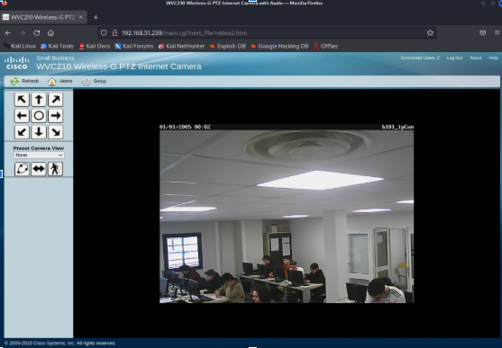

Tableau de compétences
| Projet / AP | Gérer le patrimoine informatique | Répondre aux incidents et aux demandes | Développer la présence en ligne | Travailler en mode projet | Mettre à disposition un service | Organiser son développement professionnel |
|---|---|---|---|---|---|---|
| M2L site dynamique | ||||||
| Eklekktik App mobile | ||||||
| API Aux Claviers Citoyens | ||||||
| FluoxIP |
M2L site dynamique – Travailler en mode projet
- Analyser les objectifs et les modalités d'organisation d'un projet
- Planifier les activités
- Évaluer les indicateurs de suivi d'un projet et analyser les écarts
Screenshots du projet


Eklekktik App mobile – Travailler en mode projet
- Analyser les objectifs et les modalités d'organisation d'un projet
- Planifier les activités
- Évaluer les indicateurs de suivi d'un projet et analyser les écarts
Screenshots du projet


Eklekktik App mobile – Organiser son développement professionnel
- Mettre en place son environnement d'apprentissage personnel
- Mettre en œuvre des outils et stratégies de veille informationnelle
- Gérer son identité professionnelle
- Développer son projet professionnel
Screenshots du projet


API Aux Claviers Citoyens – Développer la présence en ligne
- Participer à la valorisation de l'image de l'organisation sur les médias numériques en tenant compte du cadre juridique et des enjeux économiques
- Référencer les services en ligne de l'organisation et mesurer leur visibilité
- Participer à l'évolution d'un site Web exploitant les données de l'organisation
Screenshots du projet


API Aux Claviers Citoyens – Travailler en mode projet
- Analyser les objectifs et les modalités d'organisation d'un projet
- Planifier les activités
- Évaluer les indicateurs de suivi d'un projet et analyser les écarts
Screenshots du projet


FluoxIP – Gérer le patrimoine informatique
- Recenser et identifier les ressources numériques
- Mettre en place et vérifier les niveaux d'habilitation associés à un service
- Vérifier les conditions de la continuité d'un service informatique
- Gérer des sauvegardes
- Vérifier le respect des règles d'utilisation des ressources numériques
Screenshots du projet


FluoxIP – Travailler en mode projet
- Analyser les objectifs et les modalités d'organisation d'un projet
- Planifier les activités
- Évaluer les indicateurs de suivi d'un projet et analyser les écarts
Screenshots du projet